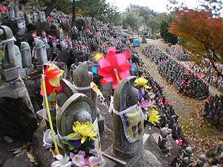
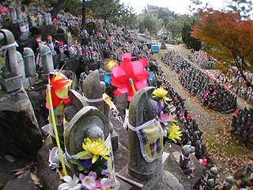

弘正寺/愛知県岡崎市
野暮用で岡崎付近を通りかかった時の事。
岡崎市の弘正寺という寺に10メートル程の弘法大師像があるという記述が寺院名鑑に載っていた事を思い出し、大した期待もせずに寄ってみる事にした。
ちなみに岡崎は日本有数の石材加工産業が盛んなお土地柄である。
岡崎の市街地の少し外れに寺町とまではいかないが何軒か寺がかたまっているところがある。
その一画に弘正寺はある。真言宗の寺だ。
寺は表通りから少し奥まったところにある。歩いている御夫人に道を訪ねるとこれから弘正寺に行くので一緒に行きましょう、という事になった。
御夫人は檀家の方だったので寺の様子を聞くと「そりゃあ、凄いですよお〜」と仰る。
えっ
10メートルの弘法大師がそんなに凄いのか？そりゃあ普通のお寺にはあまりないだろうけど、そりゃあ凄い、って何？
もしかして100メートルの間違いだったか？それとも石は石でも宝石で出来ているとか。もしかして手足が動く弘法大師とか？
様々な妄想を抱きながら歩く事数分、弘正寺に着いた。
客殿に向かう御夫人に礼をいい本堂脇の裏口のようなところから境内に入る。
むむむ。
 さいの河原？万躰地蔵尊？一体どういう事だ？
もしかして先程の御夫人が凄いと言っていたのはコレの事か？？？
金剛杖の並ぶ本堂前から境内を眺めると・・・
ぬゎんじゃあこりゃあ〜〜〜！
境内は本堂正面右手が傾斜地になっており、その傾斜地に水子地蔵がところ狭しと置かれている。
本来であれば正面の入口から入ればこの光景がいきなりお出迎え、てな事になるのだろうが、御夫人と一緒に裏門から入ったので全く気が着かなかったのだ。
これがさいの河原万躰地蔵尊。御夫人の凄いですよ〜、のコメントに偽り無し。鳥肌が立つ程の光景である。
早速、地蔵の海に身を投じてみる。
賽の河原は傾斜地に巨石を配し、その間に通路や橋を設け、ぐるりと一周出来るようになっている。
途中途中には四国八十八ケ所の写し本尊が置かれミニ八十八ケ所巡礼所となっている。
賽の河原には小さな洞窟までつくられており、内部にも石像が祭られていた。
賽の河原の一画には水子地蔵尊や「ちえおくれの地蔵様」という素敵なタイトルの番組のモデルとなったかわち地蔵などが。
地蔵だらけでただでさえ凄いのに八十八ケ所あり洞窟あり渡り橋ありの複雑な回遊式庭園風立体迷路。凄い！
・・・などと、地蔵に囲まれた通路を行ったり来たりして鐘楼（上左写真かわち地蔵の後に見える）に着く。
下から見た限りでは賽の河原はこの辺で終わりかと思っていたのだが・・・

まだまだ続いてました〜！
というか先程のところよりさらに密度が濃くなってるぞ！
もうこの辺になると、庭園の趣きなどほとんどなく、ただただ水子地蔵が密集する世界と化している。
水子地蔵がたくさんあるところといえば大抵がひな壇を設けて一直線に並べるのが常だが、ここのは石の上に幾つかの地蔵を置くので、全体的な統一感が無い。
しかしこれだけの数が集まった場合、その統一性のなさが逆に圧倒的な迫力を持つ。
加えてヨダレ掛けのビビッドな色合いが余計に数の多さを強調しているように思える。
さいの河原？万躰地蔵尊？一体どういう事だ？
もしかして先程の御夫人が凄いと言っていたのはコレの事か？？？
金剛杖の並ぶ本堂前から境内を眺めると・・・
ぬゎんじゃあこりゃあ〜〜〜！
境内は本堂正面右手が傾斜地になっており、その傾斜地に水子地蔵がところ狭しと置かれている。
本来であれば正面の入口から入ればこの光景がいきなりお出迎え、てな事になるのだろうが、御夫人と一緒に裏門から入ったので全く気が着かなかったのだ。
これがさいの河原万躰地蔵尊。御夫人の凄いですよ〜、のコメントに偽り無し。鳥肌が立つ程の光景である。
早速、地蔵の海に身を投じてみる。
賽の河原は傾斜地に巨石を配し、その間に通路や橋を設け、ぐるりと一周出来るようになっている。
途中途中には四国八十八ケ所の写し本尊が置かれミニ八十八ケ所巡礼所となっている。
賽の河原には小さな洞窟までつくられており、内部にも石像が祭られていた。
賽の河原の一画には水子地蔵尊や「ちえおくれの地蔵様」という素敵なタイトルの番組のモデルとなったかわち地蔵などが。
地蔵だらけでただでさえ凄いのに八十八ケ所あり洞窟あり渡り橋ありの複雑な回遊式庭園風立体迷路。凄い！
・・・などと、地蔵に囲まれた通路を行ったり来たりして鐘楼（上左写真かわち地蔵の後に見える）に着く。
下から見た限りでは賽の河原はこの辺で終わりかと思っていたのだが・・・

まだまだ続いてました〜！
というか先程のところよりさらに密度が濃くなってるぞ！
もうこの辺になると、庭園の趣きなどほとんどなく、ただただ水子地蔵が密集する世界と化している。
水子地蔵がたくさんあるところといえば大抵がひな壇を設けて一直線に並べるのが常だが、ここのは石の上に幾つかの地蔵を置くので、全体的な統一感が無い。
しかしこれだけの数が集まった場合、その統一性のなさが逆に圧倒的な迫力を持つ。
加えてヨダレ掛けのビビッドな色合いが余計に数の多さを強調しているように思える。
数体から数十体が同じ種類のヨダレ掛けを付けている。
恐らく同じ種類のヨダレ掛けは同一人物が奉納したのだろう。
何人の人がこのヨダレ掛けをつくっているのか知らないが、一枚一枚手で縫い、一体一体の地蔵に結んで行くのは気の遠くなるような作業である事は間違いない。
 ヨダレ掛けと同じくらい印象的なのが風車。
この日はかなり風が強かったので高速回転する沢山の風車の音が響きまくってました。
あまりの地蔵の数と密度に圧倒されながらも、石段を登って行く。
進むほどに通路の両脇に地蔵があるのか、地蔵の群れの隙間が通路になっているのか不明瞭になっていく。
その内、自分の意志で登っているのか、それとも地蔵の群れに登らされているのかすら判らなくなってくる。
と、その時地蔵の群れの頂点に弘法大師の石像が見えた。
ヨダレ掛けと同じくらい印象的なのが風車。
この日はかなり風が強かったので高速回転する沢山の風車の音が響きまくってました。
あまりの地蔵の数と密度に圧倒されながらも、石段を登って行く。
進むほどに通路の両脇に地蔵があるのか、地蔵の群れの隙間が通路になっているのか不明瞭になっていく。
その内、自分の意志で登っているのか、それとも地蔵の群れに登らされているのかすら判らなくなってくる。
と、その時地蔵の群れの頂点に弘法大師の石像が見えた。
昭和59年の作。約10メートルの石像。
ああ、俺はコレを見に来たんだったけ・・・
地蔵さんの大群に圧倒されてしまって、ハッキリいってすっかり忘れてました。
2003.12.
珍寺大道場 HOME